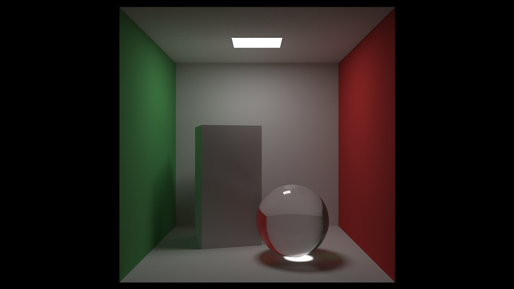

Florian Schut
Programming Graduate
Weekend Raytracer
A CPU pathtracer project to research and understand the mechanics of a Ratracer without the assistance of DirectX Raytracing
- Type: Research Project
- Team members: 1
- Start date: January 2020
- Features
- Accumulating Path Tracer
- Multithreaded Rendering
- Model Loading
A project initially started using the Peter Shirley's raytracing in a weekend series. After which more features were added in an order based on intended learning oppurtunities.

Tools used
Media

Models downloaded from Morgan McGuire's Computer Graphics Archive